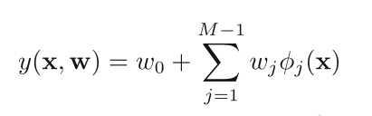
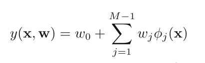
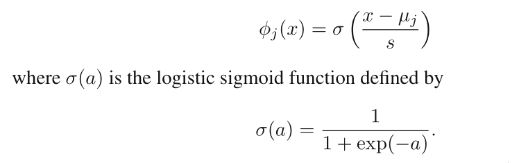
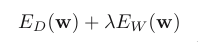
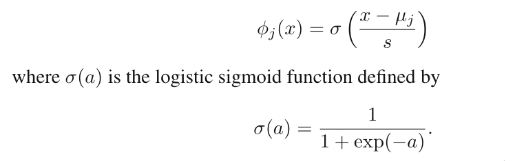
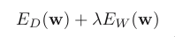

Home
Linear regression model
For setting the parameters of a linear regression model, the
effective model complexity, governed by the number of basis func‐
tions, needs to be controlled according to the size of the data
set.
What is the effective model complexity? Answer: the complexity of
the weight vector, the complexity of the basis functions.
The simplest linear model for regression is one that involves a
linear combination of the input variables:
 This is often simply known as linear regression.
It is a linear function of the input variables and also linear
function of the parameters w0, w1, ...wD. This imposes signifi‐
cant limitations on the model. Here D means dimension.
We extend it by considering linear combinations of fixed nonlin‐
ear functions of the input variables:

w0 is called a bias parameter for the purpose of setting a fixed
offset.
If a dummy function φ0 (x) = 1 is defined:
This is often simply known as linear regression.
It is a linear function of the input variables and also linear
function of the parameters w0, w1, ...wD. This imposes signifi‐
cant limitations on the model. Here D means dimension.
We extend it by considering linear combinations of fixed nonlin‐
ear functions of the input variables:

w0 is called a bias parameter for the purpose of setting a fixed
offset.
If a dummy function φ0 (x) = 1 is defined:
 This linearity in the parameters greatly simplify the analysis of
this class of models. However, it also leads to some significant
limitations.
The example of polynomial regression is a particular example of
this model in which there is a single input variable x, and the
basis functions take the form of powers of x.
There are many other possible choices for the basis functions,
for example, the Gaussian functions. It should be noted that they
are not required to have a probabilistic interpretation, and in
particular the normalization coefficient is unimportant because
these basis functions will be multiplied by adaptive parameters
wj.
‐2‐
This linearity in the parameters greatly simplify the analysis of
this class of models. However, it also leads to some significant
limitations.
The example of polynomial regression is a particular example of
this model in which there is a single input variable x, and the
basis functions take the form of powers of x.
There are many other possible choices for the basis functions,
for example, the Gaussian functions. It should be noted that they
are not required to have a probabilistic interpretation, and in
particular the normalization coefficient is unimportant because
these basis functions will be multiplied by adaptive parameters
wj.
‐2‐
 Another possibility is the sigmoidal basis function of the form:

Adding a regularization term to the log likelihood function means
the effective model complexity can then be controlled by the
value of the regularization coefficient, although the choice of
the number and form of the basis functions is of course still im‐
portatnt in determining the overall behaviour of the model.
Why adding a regularization term works?
This leaves the issue of deciding the appropriate model complex‐
ity for the particular problem, which cannot be decided simply by
maximizing the likelihood function, because this always leads to
excessively complex models and over‐fitting.
Regularized least squares
Adding a regularization term to an error function in order
to control over‐fitting, so that the total error function to be
minimized takes the form

where λ is the regularization coefficient that controls the rela‐
tive importance of the data‐dependent error and the regulariza‐
tion term.
One of the simplest forms of regularizer is given by the sum‐of‐
squares of the weight vector elements
Another possibility is the sigmoidal basis function of the form:

Adding a regularization term to the log likelihood function means
the effective model complexity can then be controlled by the
value of the regularization coefficient, although the choice of
the number and form of the basis functions is of course still im‐
portatnt in determining the overall behaviour of the model.
Why adding a regularization term works?
This leaves the issue of deciding the appropriate model complex‐
ity for the particular problem, which cannot be decided simply by
maximizing the likelihood function, because this always leads to
excessively complex models and over‐fitting.
Regularized least squares
Adding a regularization term to an error function in order
to control over‐fitting, so that the total error function to be
minimized takes the form

where λ is the regularization coefficient that controls the rela‐
tive importance of the data‐dependent error and the regulariza‐
tion term.
One of the simplest forms of regularizer is given by the sum‐of‐
squares of the weight vector elements